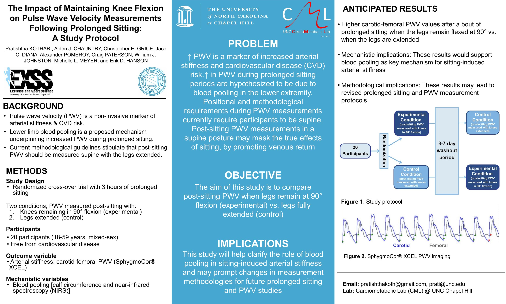
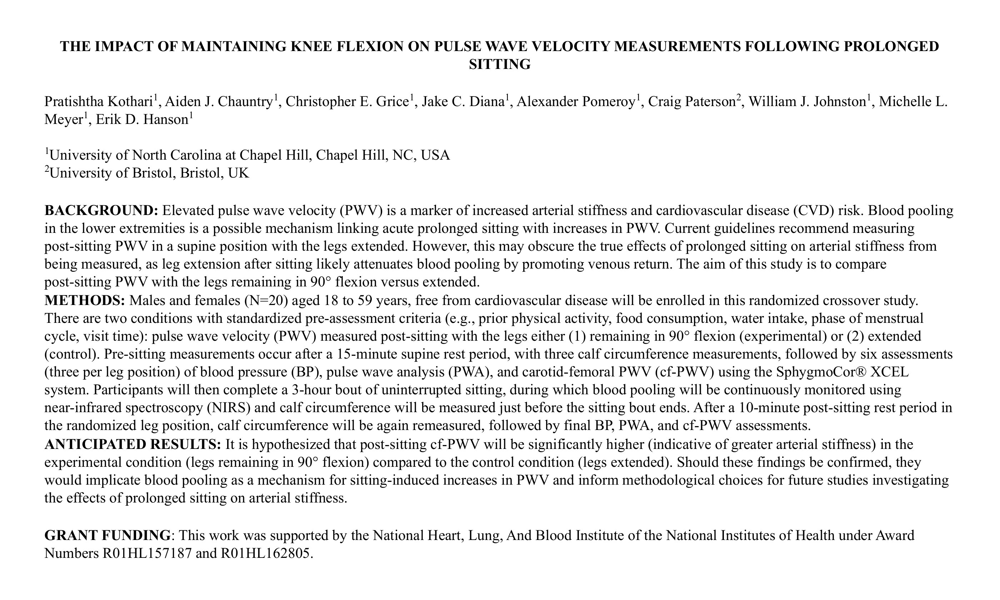

My research interest is in the relationship between endometrial injury and the regenerative capacity of menstrual blood-derived mesenchymal stem cells (MenSCs). Because MenSCs can be collected noninvasively and with minimal morbidity, they are an attractive source for cell-based therapies to repair reproductive tissue (Gargett et al., 2012), Early studies in animals and small groups of patients suggest these cells can help thicken the uterine lining in Asherman's syndrome, a condition where scar tissue inside the uterus can cause infertility. I want to study what, if any, causal relationship exists between MenSC treatment and a working uterine lining, measured by whether an embryo is able to implant followed by pregnancy. If the treatment does help, I would then look at how the cells contribute to the repair. These findings could point to new ways of treating this type of infertility beyond surgery to remove scar tissue and hormone therapy.
"The presence of the NGF in the culture medium calls forth striking and rapid changes in the fine structure of the neurons."
- Rita Levi-Montalcini, Nobel Prize 1986, Medicine
Undergraduate Researcher | September 2026 - Present
The Hursting Lab studies tirzepatide's potential to suppress obesity-linked tumor growth in obese mouse models I am conducting mRNA isolation techniques, PCR, electrophoresis, and cell culture
Research Collaborator | June 2024 - August 2026
The Cardiometabolic Lab studies cardiovascular and metabolic health in young adults. I have worked on three studies:
Meta-Analysis Contributor | November 2024 - Present
Co-authoring a quantitative review of how cancer therapies affect arterial stiffness and cardiovascular risk. I do data extraction, help with risk-of-bias assessment, and draft figures and tables with the biostatistics team.
Biotechnology Summer Intern | June 2023 - July 2023
Ran wet-lab assays on my own, including PCR, agarose gel electrophoresis, and microarray workflows.
Kothari P, et al. "The Impact of Maintaining Knee Flexion on Pulse Wave Velocity Measurements Following Prolonged Sitting." Poster presentation, Southeast American College of Sports Medicine Conference, Greenville, SC.

